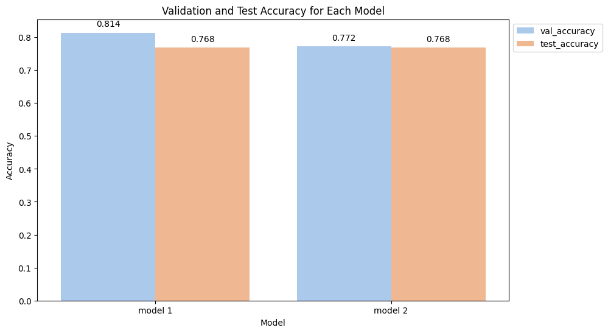

In the early stages of my journey into machine learning, I launched my first project, which was centered around classifying breast cancer. The project initially seemed successful, as I was able to achieve high accuracy during the validation phase. However, I noticed a significant drop when testing with a separate unseen dataset. It was for two months until I realized I had unintentionally leaked training data into the validation set due to improper scaling and transformation practices.
In this article, I will be demonstrating the common novice mistake that leads to data leakage. The mistakes I show here are exactly what I did before. To start, data leakage generally occurs when our training data is fed with information about the target, but similar data is available when the model is used in predictions. This leads to high score on the training set, but the model will perform poorly when tested with unseen data. In simple words, data leakage makes a machine learning model look very accurate until we start making predictions with new set of data to the model, and then the model becomes very inaccurate.
Train-Test Contamination
There are various types of data leakage, and the type I am addressing here is train-test contamination. This kind of leakage happens when the user fails to carefully distinguish between training data and validation data. For instance, during preprocessing tasks such as imputing missing values or data scaling before using train_test_split(). While the model constructed may yield a high validation score, instilling confidence, it ultimately performs poorly when tested with unseen data.
The dataset that I am using here is obtained from Kaggle competition dataset. In this demonstration, we will need to predict whether a software defects or not based on the features given.
# Import required libraries and packages
import numpy as np # For linear algebra
import pandas as pd # For data manipulation
import matplotlib as mlt # For visualization
import matplotlib.pyplot as plt # For visualization(scripting layer)
import seaborn as sns # For visualization
# Import the data
df = pd.read_csv(r'/kaggle/input/playground-series-s3e23/train.csv', index_col = 'id')
# Show the header of the data
df.head()| loc | v(g) | ev(g) | iv(g) | n | v | l | d | i | e | b | t | lOCode | lOComment | lOBlank | locCodeAndComment | uniq_Op | uniq_Opnd | total_Op | total_Opnd | branchCount | defects |
|---|---|---|---|---|---|---|---|---|---|---|---|---|---|---|---|---|---|---|---|---|---|
| 25.0 | 6.0 | 5.0 | 6.0 | 88.0 | 461.82 | 0.06 | 16.92 | 26.42 | 7621.43 | 0.15 | 423.41 | 19 | 0 | 4 | 0 | 18.0 | 18.0 | 54.0 | 36.0 | 11.0 | False |
| 36.0 | 2.0 | 1.0 | 2.0 | 133.0 | 676.63 | 0.03 | 30.23 | 22.23 | 19091.41 | 0.23 | 1060.96 | 27 | 3 | 2 | 1 | 16.0 | 13.0 | 74.0 | 49.0 | 3.0 | False |
| 7.0 | 1.0 | 1.0 | 1.0 | 16.0 | 62.51 | 0.40 | 2.50 | 21.59 | 220.18 | 0.02 | 12.23 | 4 | 0 | 1 | 0 | 5.0 | 6.0 | 11.0 | 6.0 | 1.0 | False |
| 22.0 | 2.0 | 1.0 | 1.0 | 94.0 | 456.65 | 0.09 | 11.74 | 39.72 | 5421.87 | 0.15 | 301.22 | 14 | 0 | 3 | 0 | 14.0 | 23.0 | 56.0 | 36.0 | 3.0 | False |
| 38.0 | 5.0 | 1.0 | 4.0 | 130.0 | 644.05 | 0.04 | 25.91 | 23.55 | 15572.12 | 0.21 | 865.12 | 22 | 7 | 4 | 0 | 15.0 | 17.0 | 74.0 | 51.0 | 9.0 | True |
For demonstration purposes, I skipped much of the data preparation work. Now, in this dataset, I aim to log-transform the data since most features are right-skewed. However, here’s where the mistake occurred: in my attempt to perform the log-transform, I applied the transformation to the entire dataset, df.
# Choose all the numerical columns
num_cols = [col for col in df.columns if col not in ["defects"]]
df_num = df[num_cols]
# Apply log transformation to the numerical columns
df_num_transformed = np.log1p(df_num)
# Concatenate the transformed numerical columns with the "defects" column
df_transformed = pd.concat([df_num_transformed, df["defects"]], axis=1)
df_transformed.head()| loc | v(g) | ev(g) | iv(g) | n | v | l | d | i | e | b | t | lOCode | lOComment | lOBlank | locCodeAndComment | uniq_Op | uniq_Opnd | total_Op | total_Opnd | branchCount | defects |
|---|---|---|---|---|---|---|---|---|---|---|---|---|---|---|---|---|---|---|---|---|---|
| 3.258097 | 1.94591 | 1.79176 | 1.94591 | 4.48864 | 6.13734 | 0.05827 | 2.88592 | 3.31127 | 8.93885 | 0.13976 | 6.05070 | 2.99573 | 0.00000 | 1.60944 | 0.00000 | 2.94444 | 2.94444 | 4.00733 | 3.61092 | 2.48491 | False |
| 3.61092 | 1.09861 | 0.69315 | 1.09861 | 4.89784 | 6.51860 | 0.02956 | 3.44138 | 3.14545 | 9.85705 | 0.20701 | 6.96787 | 3.33221 | 1.38629 | 1.09861 | 0.69315 | 2.83321 | 2.63906 | 4.31749 | 3.91202 | 1.38629 | False |
| 2.07944 | 0.69315 | 0.69315 | 0.69315 | 2.83321 | 4.15120 | 0.33647 | 1.25276 | 3.11751 | 5.39898 | 0.01980 | 2.58249 | 1.60944 | 0.00000 | 0.69315 | 0.00000 | 1.79176 | 1.94591 | 2.48491 | 1.94591 | 0.69315 | False |
| 3.13549 | 1.09861 | 0.69315 | 0.69315 | 4.55388 | 6.12610 | 0.08618 | 2.54475 | 3.70672 | 8.59838 | 0.13976 | 5.71116 | 2.70805 | 0.00000 | 1.38629 | 0.00000 | 2.70805 | 3.17805 | 4.04305 | 3.61092 | 1.38629 | False |
| 3.66356 | 1.79176 | 0.69315 | 1.60944 | 4.87520 | 6.46933 | 0.03922 | 3.29250 | 3.20071 | 9.65330 | 0.19062 | 6.76402 | 3.13549 | 2.07944 | 1.60944 | 0.00000 | 2.77259 | 2.89037 | 4.31749 | 3.95124 | 2.30259 | True |
As we can observe, the entire dataset has now been log-transformed. Now, let’s proceed to develop our classification model using logistic regression.
# Import libraries and packages
from sklearn.metrics import accuracy_score
from sklearn.linear_model import LogisticRegression
from sklearn.model_selection import train_test_split
# Make empty dictionaries to store accuracy
val_accuracy_dict = {}
test_accuracy_dict = {}
# Separate the data into predictor (X) and target (Y)
X = df_transformed.drop('defects',axis=1)
Y = df_transformed['defects'].values
# Split the dataset into training and validation set
x_train1, x_val1, y_train1, y_val1 = train_test_split(X, Y, stratify=Y, test_size=0.10, random_state=45)
# Initialize and train the logistic regression model. I include 1 to indicate it is Case 1/Model 1
model1 = LogisticRegression()
model1.fit(x_train1, y_train1)
# Make predictions on the validation set
y_pred1 = model1.predict(x_val1)
# Calculate accuracy
accuracy1 = accuracy_score(y_val1, y_pred1)
# Print and store the accuracy in a dictionary
print("Accuracy:", accuracy1)
val_accuracy_dict['model 1'] = accuracy1Accuracy: 0.8136592556197028In Case 1, where we transformed the entire dataset, we achieved a validation accuracy of 81%. In practice, it is advisable to perform cross-validation to ensure the reliability of our accuracy score, although we will skip this step for now. We can anticipate obtaining a similar accuracy of around 81% when using this model to predict unseen data.
Now, let’s proceed to Case 2, where we followed good practices in transforming the dataset.
# Separate the data into predictor (X) and target (Y)
X = df.drop('defects',axis=1)
Y = df['defects']
# Split the dataset into training and validation set. I include 2 to indicate it is Case 2/Model 2
x_train2, x_val2, y_train2, y_val2 = train_test_split(X, Y, stratify=Y, test_size=0.10, random_state=45)
# Choose all the numerical columns
num_cols2 = [col for col in x_train2.columns]
numerical_columns2 = x_train2[num_cols2] # Notice here I only select the training set instead of the whole dataset df
# Apply log transformation to the numerical columns
x_train2 = np.log1p(numerical_columns2)
# Initialize and train the logistic regression model
model2 = LogisticRegression()
model2.fit(x_train2, y_train2)
# Make predictions on the validation set
y_pred2 = model2.predict(x_val2)
# Calculate accuracy
accuracy2 = accuracy_score(y_val2, y_pred2)
# Print and store the accuracy in a dictionary
print("Accuracy:", accuracy2)
val_accuracy_dict['model 2'] = accuracy2Accuracy: 0.7716496744871637Oh, what a surprise! Our “good practice” model performed worse on the validation set. Shocking, right? Here, we can observe that the validation accuracy of Model 2 is lower compared to the validation accuracy of Model 1. Let’s now evaluate the performance of both Model 1 and Model 2 with unseen data.
Case 1
# Use Model 1 to predict unseen data
pred1 = model1.predict(x_test)
# Print the test accuracy score
print("Accuracy:", accuracy_score(y_test, pred1))
test_accuracy_dict['model 1'] = accuracy_score(y_test, pred1)Accuracy: 0.768387952635975Case 2
# Use Model 2 to predict unseen data
pred2 = model2.predict(x_test)
# Print the test accuracy score
print("Accuracy:", accuracy_score(y_test, pred2))
test_accuracy_dict['model 2'] = accuracy_score(y_test, pred2)Accuracy: 0.768387952635975
The test accuracy for both of our models appears to be the same. However, it’s crucial to note the difference in accuracy for Model 1 between the validation set and the test set. There is no difference in Model 2, which adhered to the good practice of transforming the training set only.
This discrepancy highlights the impact of data leakage. When data leakage occurs, the accuracy obtained during the model’s development phase tends to be overly optimistic, resulting in a high score during evaluation. However, when the model is used to predict unseen data, its performance is notably worse, similar to the scenario in Case 1.
During model development, the score obtained should ideally reflect what can be expected when predicting unseen data. Experiencing a drop in accuracy during deployment, as seen in Case 1, is problematic, particularly when the model is intended for business purposes. This underscores the importance of correct data handling and following good practices, as demonstrated by Model 2, to ensure the model’s reliability in real-world applications.
We can enhance the practice of Model 2 by implementing a Pipeline, a topic I will explore into later. For now, I aim to illustrate the occurrence of data leakage, a rookie mistake I made during my early days in machine learning.